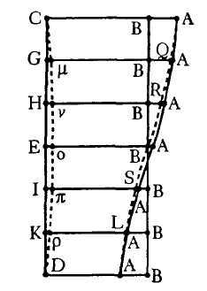
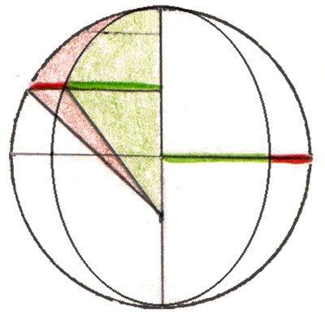

Chapter 47
A common difficulty in the methods of chapter 46 was the difference between the area of the circle and the area of the ovoid. Also, the difficulties that plagued him in chapter 40 have returned -- even if he could determine the area of the ovoid, it is still not the sum of the distances. He considers this difference to be small, however, referring to his calculation of chapter 43.
Determining the ovoid area
Kepler now seeks to find the “quadrature of the oval-shaped plane which chapter 45 brought forth.” To escape this difficulty, Kepler calls upon “a deus, or rather, a ratio ex machina,” and resolves upon using an ellipse to approximate the area of the ovoid.
In an intense geometrical proof (be prepared to spend a couple of hours with your friends), Kepler proves that the area of the cut-off lunule δολθ is equal to the area of the semicircle formed by the eccentricity βα, and, equivalently, that the width of the lunule is to the eccentricity as the eccentricity is to the radius.
By removing this area from the area of the circle, Kepler determines the area of the ovoid to be 31,146,400,000 in units of which the radius is 100,000. He also determines the maximum width of the lunule to be 100,000 : 9264 :: 9264 : lunule width, making the width 858, a number that Kepler will return to later.
Using the area of the ovoid
Unfortunately, despite the use of the “deus, or ratio ex machina” (using the area of the ellipse to estimate the area of the ovoid), the difficulty of dividing the ovoid remains. For although we have an approximation for the entire area, how can we divide it?
“Nevertheless, it is not enough to know the magnitude of the area of the ovoid. Indeed we need also understand how to divide it.”
Kepler repeats his oft-used diagram from chapter 40, adding in the Greek letters on the dotted line on the left: CμνοπρD. These give the width of the lunule. For example, Eο is the width of the lunule at the quadrant. This would suggest that the area to the right of the dotted line CμνοπρD corresponds to the area of the ovoid, but:
“O geometers, to say this is not to demonstrate it!”
One problem Kepler raises is that although length CμνοπρD is longer than CED on the conchoid, the circumference of the ovoid is actually shorter than the semi-circumference. Kepler will keep quite a few future geometers busy with the problems he leaves!
Another contrivance
“So once again... since there is no way out through geometry, we shall be content with a contrivance.”
By assuming that the orbit is a perfect ellipse, Kepler is able to use a proportionality between the circle and the ellipse. The same proportion holds between the perpendiculars to the ellipse and to the circle. The green line has a certain proportion to the green-red line, no matter where it is located. Similarly, the green elliptical area has the same proportion to the red-green circular area, no matter where the areas are drawn to.
This means that there is no need to work with dividing the elliptical area at all: we can use divisions of the circular area instead!
Since the eccentricity has not changed since he used it in chapter 43, Kepler uses the same mean and eccentric anomalies that he had used in that chapter. The difference now is in the equated anomaly -- the planet is no longer seen by the sun on the circumference of the circle, but rather on the ellipse.
Area-Time
Two areas are combined to give the total area swept out. Although the planet is actually at ν, we will use the circular area based on point B. This is composed of a red circular sector βBδ and a blue triangle βBα. The circular sector is simply a portion of the area of the circle corresponding to the eccentric angle’s portion of 360°. The triangle’s area is half the base (the eccentricity) times the height (line BC = sine of angle δβB).
Since area measures time (the whole area of the circle equals one planetary year), by finding the eccentric angle that gives a desired area, and then dropping from the circle to the ellipse, we get the position of the planet at a given time.
Moving to the ellipse
Now, consider the problem of finding out where the sun sees the planet (its equated position).
Triangle αCν will be the key to solving this problem. We know αβ, the eccentricity. Since we now know the eccentric angle δβB, its sine is BC and its cosine is βC. Now we have to figure out how long νC is. Because of the constant proportion between the circle and the ellipse, Bν : BC is the same ratio as at 90° eccentric anomaly, and Kepler knows this width to be 858 : 100000 from the first half of this chapter.
So we simply have Tan(Cαν) = νC / (βC + αβ). Kepler works through these equated anomalies at eccentric anomalies of 45°, 90°, and 135°. This is what he finds:
Resulting Orbit
Results
| Mean Anomaly | Vicarious Hypothesis | Area-Time: circle (43) | Area-time: ovoid-ellipse |
|---|---|---|---|
| 48°45'12" | 41°20'33" | 41°28'54" | 41°14'9" |
| 95°18'28" | 84°42'2" | 84°42'26" | 84°39'42" |
| 138°45'12" | 131°7'26" | 130°59'25" | 131°14'5" |
As you can see, the application of the physical principle of motion to the ovoid-elliptical hypothesis implemented in this chapter comes out slightly better than the circular hypothesis of chapter 43: it is only 6' or 7' off, as opposed to 8' at the octants. More importantly, examine the directions of the error for the two hypotheses:
“You will note that the truth is exactly in the middle between these.”
| Next |